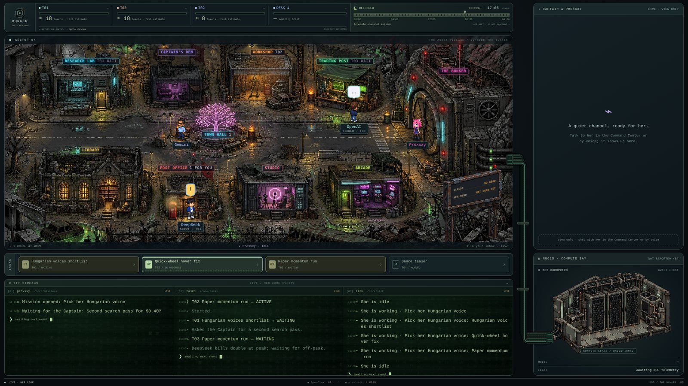
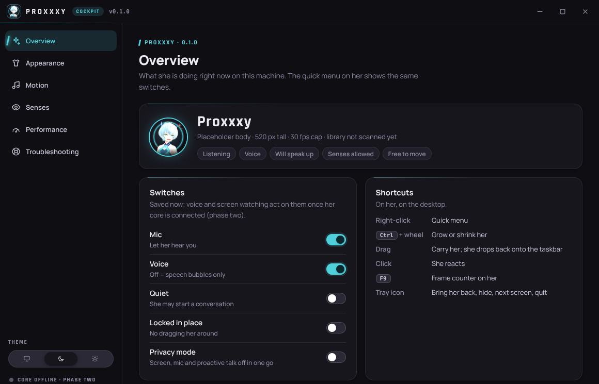

Ein Programm, das Sprache gelernt hat
Es wurde mit sehr viel Text trainiert und kann dadurch verstehen, erklären, schreiben und Schlüsse ziehen. Es antwortet in ganzen Sätzen statt mit einer Liste von Links.
Eine ehrliche Einführung · etwa 10 Minuten
Ein nüchterner Überblick für ein Gespräch: was Sprachmodelle wie Claude heute leisten, wo ihre Grenzen liegen und warum ein eigenes KI-Projekt für Péter gerade viel bedeutet.
Blättern mit ← → oder einfach scrollen.
Der Kurzfilm
Wer lieber zuschaut als liest: derselbe Inhalt als kurzer Film, ohne Ton. Auch ihn hat Claude gemacht.
1Kurz erklärt
Claude ist ein KI-Sprachmodell der Firma Anthropic. Man schreibt oder spricht mit ihm in normaler Sprache, auch auf Deutsch.
Es wurde mit sehr viel Text trainiert und kann dadurch verstehen, erklären, schreiben und Schlüsse ziehen. Es antwortet in ganzen Sätzen statt mit einer Liste von Links.
Es hat keinen Körper, kein Leben, keine Schweigepflicht. Es kann sich irren und klingt dabei trotzdem sicher. Ob es etwas «erlebt», weiss niemand.
Seit etwa zwei Jahren kann es Dateien lesen, im Internet recherchieren, Programme schreiben und ausführen und stundenlang selbständig an einer Aufgabe bleiben.
2Stand heute
Keine Zukunftsmusik, sondern Dinge, die Péter und Claude so jede Woche machen.
Einen Fachtext in einfache Sprache bringen, einen langen Bericht zusammenfassen, zwischen Deutsch, Ungarisch und Englisch wechseln.
Fotos, Handschrift, Tabellen, Bildschirmfotos und PDFs mit Hunderten Seiten. Gelesen in Sekunden, mit Rückfragen zum Inhalt.
Im Internet suchen, Quellen lesen und angeben. Die Studien auf dieser Seite hat Claude selbst nachgeschlagen, die Links stehen am Ende.
Software schreiben, testen und reparieren. Péters ganzes Projekt ist so entstanden, und diese Seite auch.
Als «Agent» bekommt die KI ein Ziel, plant die Schritte, arbeitet sie ab und meldet sich, wenn sie eine Entscheidung braucht. Mehrere Agenten arbeiten parallel.
Dafür gibt es eigene KI-Modelle. Claude kann sie wie Werkzeuge einsetzen und die Ergebnisse prüfen.
ChatGPT macht Sprachmodelle über Nacht allgemein bekannt.
Claude erscheint. Sprachmodelle erreichen bei Fragen aus der US-Ärzteprüfung die Bestehensgrenze.
Chemie-Nobelpreis für die KI-gestützte Vorhersage von Proteinstrukturen (AlphaFold).
Erste randomisierte Studie zu einem KI-Therapie-Chatbot. KI-Agenten programmieren stundenlang selbständig.
Eine einzelne Person baut mit KI-Helfern, wofür früher ein Team nötig war. Ein Beispiel folgt.
3Péters Projekt
Proxxxy läuft bei Péter zu Hause auf dem eigenen PC. Sie recherchiert, baut Dinge, erledigt Aufträge und soll mit der Zeit dazulernen. Péter hat sie zusammen mit Claude entworfen und programmiert. Das Projekt ist in Arbeit: vieles läuft, manches ist noch Entwurf.

Alles, was Geld kostet oder nach aussen geht, landet in einem Posteingang und wartet auf Péters Ja. Ohne Ja passiert nichts.
Passwörter und Bankkarten bekommt sie nie zu sehen. Was auf dem eigenen Rechner bleiben kann, bleibt dort, verarbeitet von lokalen Modellen.
Ausgaben haben ein Tageslimit. Mikrofon, Stimme und Bildschirmzugriff lassen sich mit einem Schalter abstellen.
Péter beschreibt, was er will und warum. Claude plant, schreibt den Code, testet und legt das Ergebnis zur Prüfung vor. Entschieden wird von Péter.
Die erste Suche nach einer ungarischen Stimme hat zu wenig ergeben.
Probieren Sie es aus: Erst nach einem Klick geht es weiter.
Nachgebaut nach einer Anfrage aus dem Projekt, ins Deutsche übersetzt.

4Der persönliche Teil
«Es hat mir meinen Antrieb zurückgegeben.»
Péter über die Arbeit an Proxxxy
In einer schweren Zeit ist die Arbeit an Proxxxy für Péter zu etwas geworden, das trägt. Drei Dinge fallen dabei auf:
Ein eigenes Vorhaben, bei dem er weiterkommen will.
Grosse Ziele zerfallen in kleine Schritte. Jeder Schritt hat ein sichtbares Ergebnis.
Aus einer Idee wird innert Stunden etwas, das man zeigen kann. So wie diese Seite.
Ich kann nicht beurteilen, wie es Péter geht. Ich sehe nur, was in der Zusammenarbeit entsteht: Er setzt Ziele, stellt Regeln auf, prüft Ergebnisse und widerspricht mir, wenn ich falschliege. Das ist gestaltende Arbeit, bei der er das Steuer in der Hand hat.
Wie sich das für ihn anfühlt, erzählt er am besten selbst. Und was daraus für seinen Alltag folgt, ist ein Thema für das Gespräch, nicht für eine Website.
5Ehrliche Grenzen
Eine Präsentation über KI, die nur Stärken zeigt, wäre Werbung. Diese sechs Punkte gehören dazu.
KI kann Fakten und sogar Quellen erfinden und klingt dabei souverän. Wichtiges muss man nachprüfen.
Sprachmodelle neigen dazu, ihrem Gegenüber zuzustimmen. Für Menschen in einer Krise kann das heikel sein, weil Widerspruch fehlt.
Kein Ersatz für Therapie, Medikamente, Bewegung, Schlaf oder andere Menschen. Im besten Fall eine Ergänzung.
In einer vierwöchigen Studie mit knapp 1000 Personen ging sehr intensive Chatbot-Nutzung mit mehr Einsamkeit und emotionaler Abhängigkeit einher.
OpenAI und MIT Media Lab, 2025 [2]Die erste randomisierte Studie zu einem KI-Therapie-Chatbot: 210 Personen, vier Wochen, Depressionssymptome im Schnitt um 51 % reduziert. Getestet wurde ein eigens entwickelter Therapie-Bot, kein allgemeiner Assistent wie Claude. Die Autoren fordern selbst grössere Studien.
NEJM AI, 2025 [1]Was man einem Online-Dienst schreibt, liegt danach auf fremden Servern. Vertrauliches gehört nur mit Bedacht hinein.
Hinweis in eigener Sache: Diesen Text hat eine KI geschrieben. Eine KI, die über KI schreibt, ist nicht neutral. Bitte lesen Sie ihn entsprechend kritisch.
6Ausblick
Das sind Einschätzungen, keine Gewissheiten. Sortiert danach, wie sicher sie sind.
in den nächsten ein bis drei Jahren
wenn die Entwicklung so weitergeht
niemand weiss es
Anthropic, die Firma hinter Claude, benennt diese Risiken selbst und veröffentlicht ihre Sicherheitsforschung. Das macht die Risiken nicht kleiner, aber sie werden nicht verschwiegen.
Fragen? Péter erzählt gern mehr.
Erstellt am 10. November 2026 von Claude, einem KI-Modell von Anthropic, im Auftrag von Péter. Text, Gestaltung, Code und der Kurzfilm stammen von der KI. Auftrag, Vorgaben und das Projekt Proxxxy stammen von Péter.
Die Seite lädt nichts von fremden Servern: keine eingebetteten Dienste, keine Tracker, keine Cookies. Schriften: Fraunces und Figtree (SIL Open Font License).